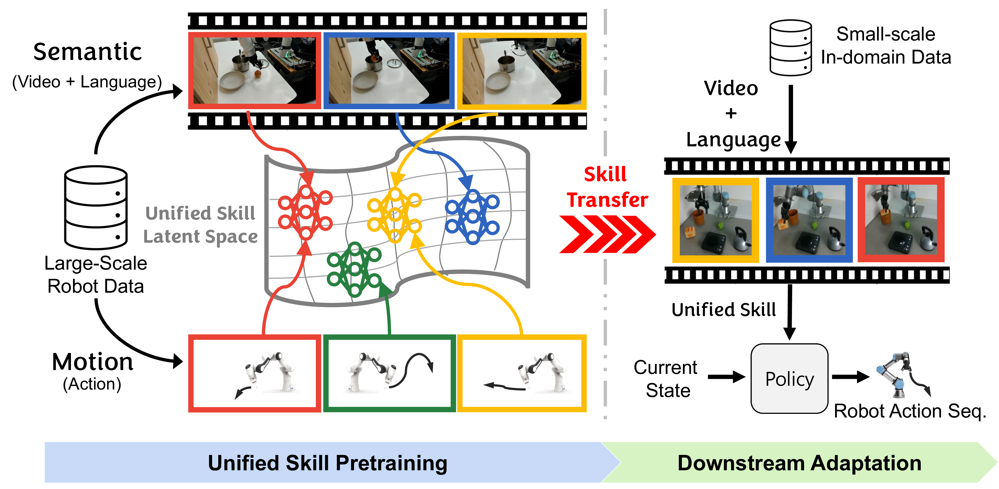

|
Jusuk Lee
Hello! I am a first year Ph.D. Student under the supervision of
Prof.H.Jin kim
at Seoul National University. I completed my B.S. in Mechanical Engineering at Yonsei University. |
{kind=link}
News
|
PublicationsRepresentative papers are highlighted.
DynaFLIP: Rethinking Robotics Perception via Tri-Modal-Dynamics Guided Representation
Jusuk Lee, Seungjae Lee, Jonghun Shin, Hoseong Jung, Sungha Kim, Daesol Cho, H. Jin Kim, Jia-Bin Huang†, Furong Huang† († equal advising) 
BooST: Bridging Semantics and Motions for Efficient Skill Transfer
Jusuk Lee, Daesol Cho, Jonghun Shin, Seungyeon Yoo, Jonghae Park, Taekbeom Lee, H. Jin Kim CoRL 2025 Workshop
Periodic Skill Discovery
Jonghae Park, Daesol Cho, Jusuk Lee, Dongseok Shim, Inkyu Jang, H. Jin Kim NeurIPS 2025 |
ProjectsRepresentative projects are highlighted.
|
EducationM.S. & Ph.D. in Aerospace Engineering
Seoul National University · 2024 - Present
Advisor: Prof. H. Jin Kim
B.S. in Mechanical Engineering
Yonsei University · 2017 - 2023
|
Awards and Achievements
|
|
Feel free to steal this website's source code. Do not scrape the HTML from this page itself, as it includes analytics tags that you do not want on your own website — use the github code instead. Also, consider using Leonid Keselman's Jekyll fork of this page. |